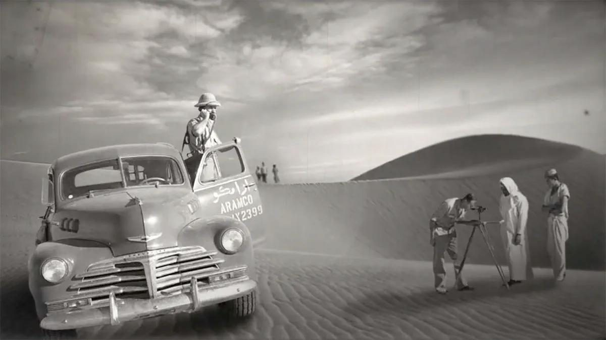
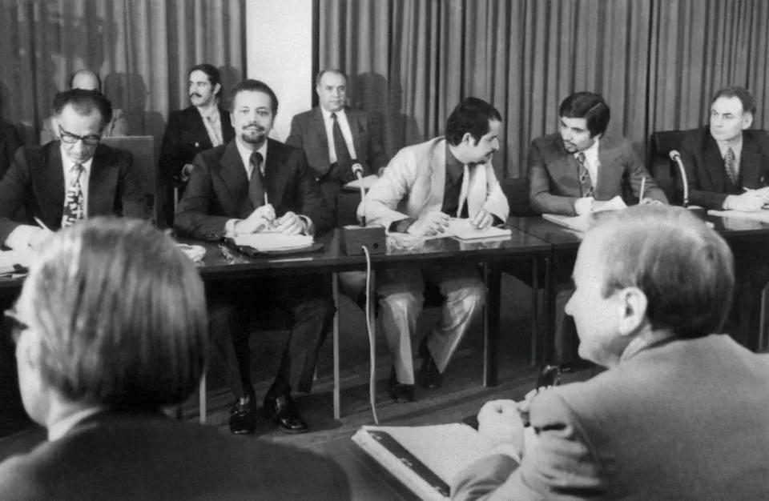
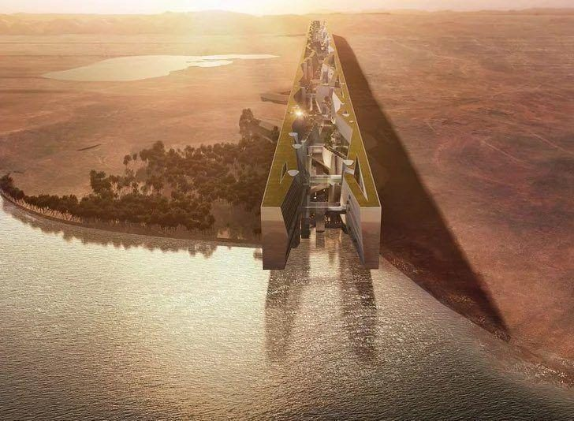
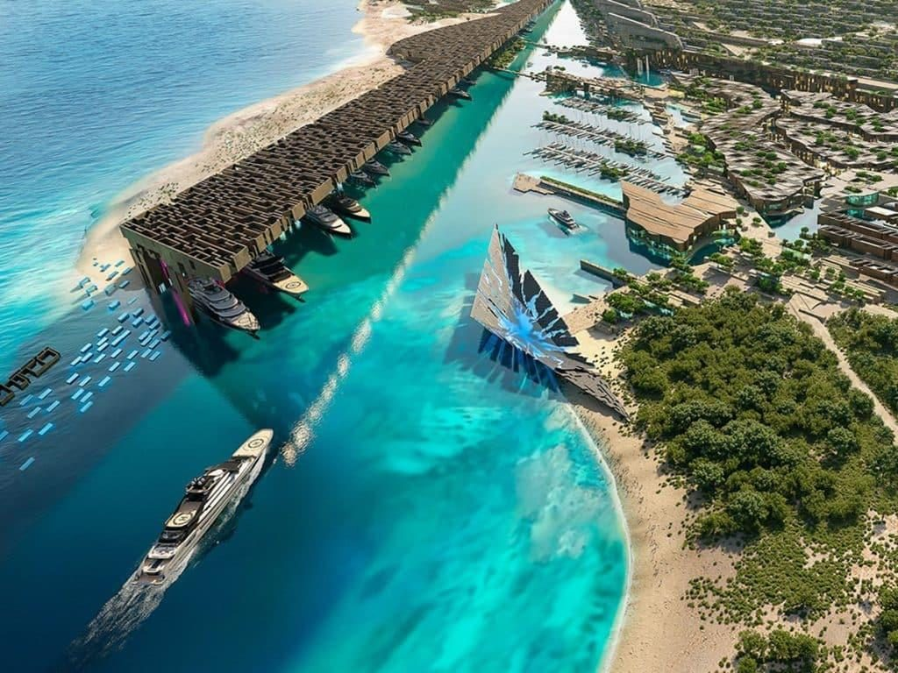

الدولة السعودية الأولى
تأسيس الدولة السعودية الأولى على يد الإمام محمد بن سعود.
مرّت المملكة العربية السعودية بثلاث مراحل تاريخية رئيسية، وصولًا إلى الدولة السعودية الحديثة التي أسسها الملك عبدالعزيز بن عبدالرحمن آل سعود عام 1932م.
تأسيس الدولة السعودية الأولى على يد الإمام محمد بن سعود.
استعادة الحكم السعودي وتأسيس الدولة الثانية على يد الإمام تركي بن عبدالله.
استرداد الملك عبدالعزيز مدينة الرياض.
إعلان توحيد البلاد باسم المملكة العربية السعودية.
سبعة ملوك منذ توحيد المملكة. اختر ملكًا لعرض سيرته وأبرز أحداث عهده وأولياء العهد في زمنه.
التواريخ ميلادية، وبعض الأحداث تمثّل أبرز المحطات وليست حصرًا لجميع إنجازات كل عهد.
جدول مختصر يجمع تسلسل ولاية العهد في الدولة السعودية الحديثة.
| الملك | ولي العهد |
|---|---|
| عبدالعزيز | سعود |
| سعود | فيصل |
| فيصل | خالد |
| خالد | فهد |
| فهد | عبدالله |
| عبدالله | سلطان، ثم نايف، ثم سلمان |
| سلمان | مقرن، ثم محمد بن نايف، ثم محمد بن سلمان |
تسلسل من تولّوا رئاسة مجلس الوزراء منذ إنشائه عام 1953م.
| الفترة | رئيس مجلس الوزراء |
|---|---|
| 1953–1954 | الأمير سعود بن عبدالعزيز |
| 1954–1960 | الأمير فيصل بن عبدالعزيز |
| 1960–1962 | الأمير سعود بن عبدالعزيز |
| 1962–1964 | الأمير فيصل بن عبدالعزيز |
| 1964–1975 | الملك فيصل |
| 1975–1982 | الملك خالد |
| 1982–2005 | الملك فهد |
| 2005–2015 | الملك عبدالله |
| 2015–2022 | الملك سلمان |
| 2022–حتى الآن | الأمير محمد بن سلمان |
ملاحظة: هذه ليست قائمة بجميع الوزراء؛ فالوزارات شهدت تغييرات وتعيينات كثيرة عبر العقود.







للتأكد من المعلومات والرجوع إلى الوثائق والصور الرسمية: